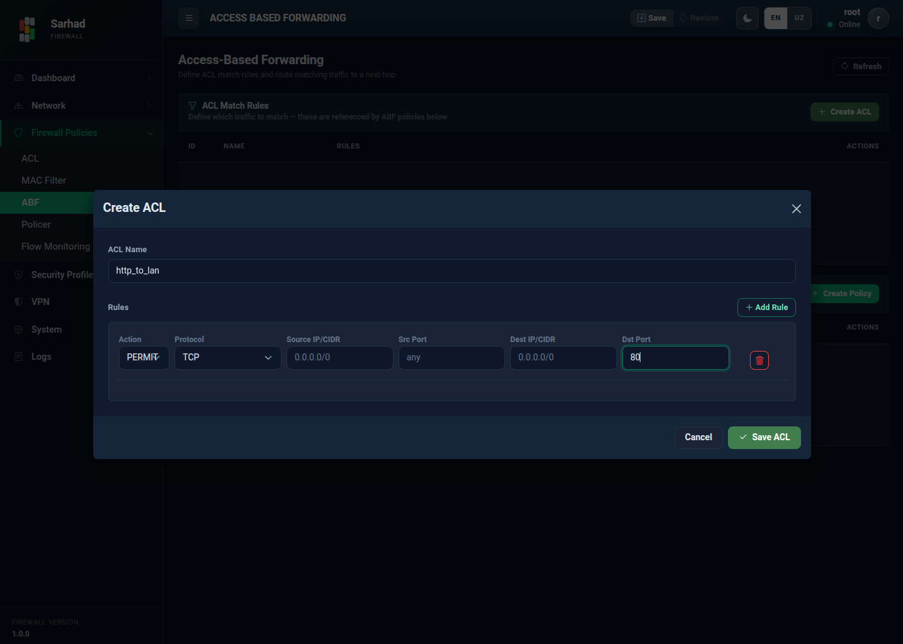

3. Manbaga asoslangan marshrutlash (ABF)
ABF (Access-Based Forwarding) — bu siyosatga asoslangan marshrutlash
(policy-based routing). Oddiy marshrutlash faqat manzil (destination) IP’ga
qarab yo’l tanlaydi; ABF esa trafikni boshqa belgilari (manba IP, port,
protokol) bo’yicha tanlab, uni maxsus keyingi tugunga (next-hop) yo’naltirish
imkonini beradi. Ushbu bo’limga o’tish uchun chap menyudan Firewall → ABF
bo’limini tanlang (/abf).

3.1. Qachon ishlatiladi
ABF quyidagi holatlarda foydali bo’ladi:
Ma’lum bir tarmoq yoki foydalanuvchilar trafigini boshqa kanal (masalan, ikkinchi internet provayder) orqali yuborish.
Ayrim ilovalar trafigini alohida yo’nalishga ajratish.
3.2. ABF ikki bosqichda sozlanadi
ACL Match Rule — qaysi trafikni tanlash kerakligini aniqlaydi.
ABF Policy — tanlangan trafikni qayerga (next-hop) yo’naltirishni belgilaydi va interfeysga qo’llaydi.
3.3. 1-bosqich: ACL Match Rule yaratish
Create ACL tugmasini bosing.
ACL Name maydoniga nom kiriting (masalan,
match-http-from-lan).Add Rule orqali bir yoki bir nechta qoida qo’shing. Har bir qoida quyidagi maydonlardan iborat:
Maydon
Tavsifi
Action
PERMIT(mos trafikni ABF’ga olish) yokiDENY.Protocol
Any, TCP, UDP, ICMP yoki boshqa protokol raqami (0–255).
Source IP/CIDR
Manba tarmoq (masalan,
0.0.0.0/0— barchasi).Src Port
Manba porti (yoki
any).Dest IP/CIDR
Manzil tarmoq (masalan,
0.0.0.0/0).Dst Port
Manzil porti (yoki
any).Save ACL tugmasini bosing.
{kind=link}

3.4. 2-bosqich: ABF Policy yaratish
ABF Policy yuqorida yaratilgan ACL’ni keyingi tugun (next-hop) bilan bog’laydi va interfeysga qo’llaydi.
Create Policy tugmasini bosing.
Quyidagilarni belgilang:
ACL — qaysi trafik mos kelishini (yuqorida yaratilgan ACL).
Next-Hop IP — mos trafik yo’naltiriladigan keyingi tugun manzili (masalan,
10.10.0.1).Apply to Interface (input) — siyosat qo’llaniladigan interfeys (kiruvchi yo’nalishda).
Priority — siyosat ustuvorligi (bir nechta siyosat bo’lganda tartibni belgilaydi).
Create & Apply tugmasini bosing.

Yaratilgan siyosatlar ABF Policies jadvalida ACL, Next-Hop, interfeys va ustuvorligi bilan ko’rsatiladi.
Note
ABF tanlangan trafikni odatiy marshrutlash jadvalini chetlab o’tib, ko’rsatilgan next-hop’ga yuboradi. Shuning uchun next-hop manzili shu interfeys orqali yetib boradigan ishlaydigan manzil ekanligiga ishonch hosil qiling.